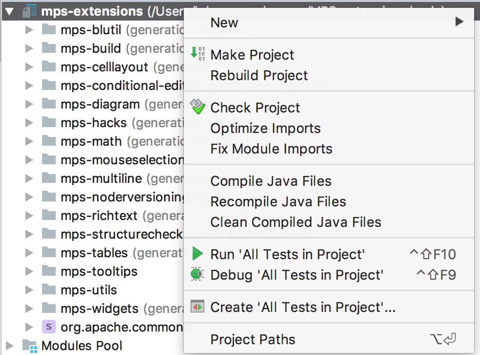
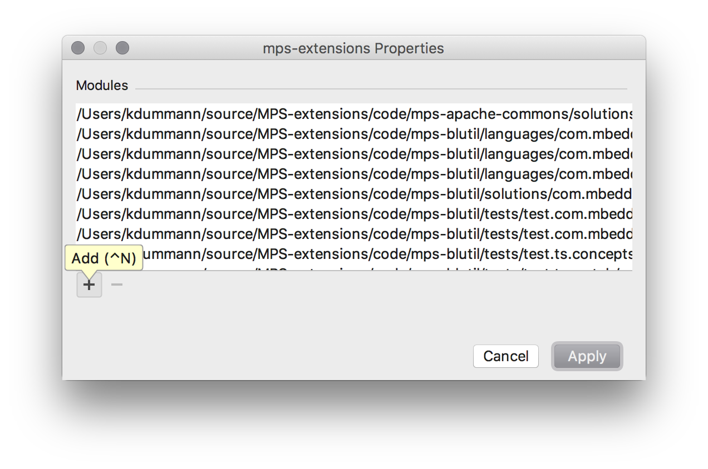
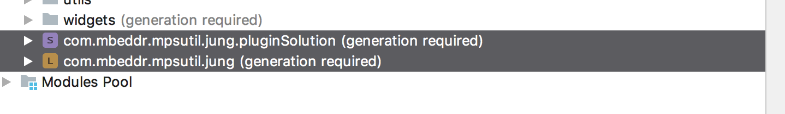
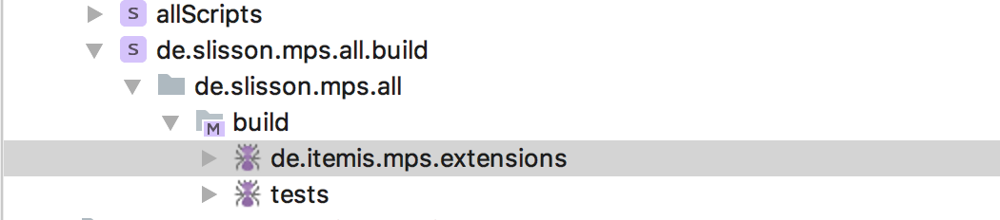
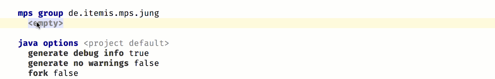
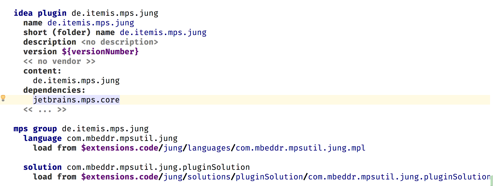
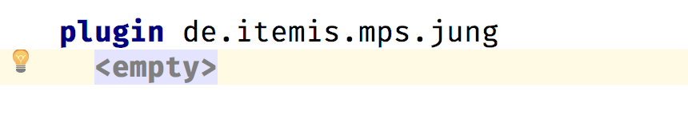
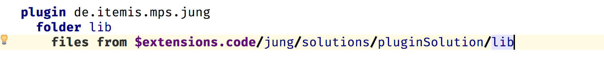

Migrating an Extension from the mbeddr Platform¶
No plans exist to migrate more extensions from mbeddr to this repository at the moment.
Two different ways of migrating an extension from the mbeddr platform to the MPS-Extensions exist:
- The extension already exists as a separate plugin in the mbeddr platform
- The extension is part of the big
com.mbeddr.mpsutilplugin
Check the Dependencies¶
First, check if all dependencies of the extension to migrate are already migrated to MPS-extensions. If not, you can’t migrate the extension. How do you achieve that?
To check whether the target extension already has all its dependencies migrated:
- Clone mbeddr.core.
- Once downloaded, open the
com.mbeddr.buildproject in MPS.- The location should be
[your download folder]\mbeddr.core\code\languages\com.mbeddr.build
- The location should be
- Get the details of the target extension:
- Open the related GitHub issue for the target extension.
- For example, for the “querylist” extension, the URL of the GitHub issue is MPS_EXT-23.
- Inside the issue page, click the link that is related to the extension.
- The link normally starts with
http://127.0.0.1. - For this example, the link is this.
- The link normally starts with
- Clicking that link will select the corresponding plugin entry in the build script in your open MPS project.
- Open the related GitHub issue for the target extension.
After doing the steps above, you will see something like the following entry in MPS, in your open com.mbeddr.build project:
Check the dependencies section of the plugin. If it contains plugins that start with com.mbeddr then it still has dependencies on mbeddr and cannot be moved.
Move the Files¶
If all dependencies are already part of MPS-extensions, we can start with migrating the extension. Follow the reference(s) in the content section. For example: group.jung:
Both modules above are located under the code/languages/com.mbeddr.mpsutil/languages/com.mbeddr.mpsutil.jung directory.
Steps to create a new extension:
- Create a folder in the MPS-extensions repository where we can place these files.
- This folder should be placed under the existing
codedirectory of the MPS-Extensions repository. - The naming convention is that it shall contain the last name of the namespace. In this case
jung. - The resulting folders therefore should be:
code\jungand alsocode\jung\languages.
- This folder should be placed under the existing
-
Copy all the files from the mbeddr repository
code/languages/com.mbeddr.mpsutil/languages/com.mbeddr.mpsutil.jungto the newcode/jung/languagesin the MPS-extensions repository. -
After copying, check if there is an existing
solutionsfolder to the language you migrated such that you now have acode/jung/languages/solutionsfolder. If you do, move the files fromcode/jung/languages/solutionsto thecode/jung/solutionsfolder. This is because the structure in the MPS-extensions repository slightly differs from the one in mbeddr. -
Remember: you are copying from the
mbeddr.corefolder and pasting them to theMPS-Extensionsfolder.
Sounds too complicated? Don’t worry we will help you when sent the pull request to get it right.
Adding the Files to the Project¶
The files need to be part of the MPS project to show up in MPS. This is done by adding them to the project path/modules:

And then selecting the copied files:

The files end up in no folder in the project by default. They should be placed in a virtual folder of the project that matches the subfolder under the code folder. In this case jung:


After this is done the last step that is missing is adding the plugin to the build.
Adding it to the Build¶
To build the plugin that was moved, it needs to be a part of the build scripts. These scripts are located under the build folder of the project. The solution of interest is de.itemis.mps.extensions.build. And then the de.itemis.mps.extensions build project:

The first thing required is a group where all the implementation modules of the plugin are placed. Tests are placed in a different script. The group is named like the mbeddr group name but the prefix is not com.mbeddr.mpsutil but de.itemis.mps. In this case this results to de.itemis.mps.jung. This group then contains all the solutions and languages of the plugin:

After the group is created, an idea plugin is required. This plugin references the group and should be placed right above the group in the build script. This is important to keep the build script maintainable.

The final step is adding the plugin to the layout section of the build project.

After adding the plugin to the layout it should be possible to build the model but usually an error like this will be shown:
This error message means that some jar files that are used by the language or some solutions are missing. The convention here is to create a lib folder in the plugin and include the required jar files. These files are usually contained in a lib folder.

Sending the Pull Request¶
To verify that everything works correctly run:
This command should finish successfully. After that please create pull request at our repository and label it with migration
If something doesn’t work out quite well or you are unsure what to do, don’t worry. You can still send the PR and somebody will guide you through the process.
Bonus¶
If you are really eager you can send a PR to the mbeddr platform repository to remove the plugin there.
Grammar Cells Migration¶
Starting from version 2018.2.348 the MPS extensions also contain Grammar Cells which have been ported over from the mbeddr platform. For users of Grammar Cells this is mostly a transparent change since the mbeddr platform currently repackages the MPS extensions. This means that if you are using the mbeddr platform today you should not have to do much manual work.
mbeddr changes¶
The most obvious change here is that the version of the mbeddr artefacts was incremented by a minor. That means you will have to adjust your build files to get the version 1.1+ instead of 1.0*. Please consult the documentation of your build tool how to configure your dependency resolving.
We did this change to ensure that you do not accidentally get the new version. See the last section for the reason.
The 1.0+ versions remain in our nexus as they are in the current state but will not get any updates. If you want to get newer versions of the mbeddr platform your have to change your dependency version. If you download your artefacts manually from the mbeddr GitHub page everything is the same as before but the version number is incremented.
Other than that the artefacts didn’t change and still contain the repackaged platform. We are planning to add a additional artefact that doesn’t repackaged the MPS-extensions in the future to allow you more flexibility.
Changes to MPS Extensions¶
In the MPS extensions we only have additive changes. We added the mpsutil.grammarcells.* modules in that same state as they were in the mbeddr platform. You shouldn’t observe any changes. Besides that, we kept the language ids to avoid any visible change for existing users of the languages.
The MPS Extensions’ version number remain in the normal scheme as documented above.
Required changes for projects¶
If your project is using Grammar Cells today it is using them through the mbeddr platform. If you do so you simply need to adjust the version number the dependency on the mbeddr platform, and you are good to go.
If your build scripts show errors after changing the dependency a simple “reload modules from disk” intention should be able to fix them.
If you only have a dependency to the mbeddr platform because you want to use Grammar Cells you are now able to drop that dependency. Replace the dependency on the mbeddr platform with a dependency on the correct version of MPS extensions. In this case you need to modify your MPS build scripts to no longer use the mbeddr platform as dependency but the MPS extensions. Afterwards, MPS will complain that it can’t find the dependency on Grammar Cells language in the build. To fix this, invoke the intention *reload modules from disk’ in the affected build script and the errors should go away.